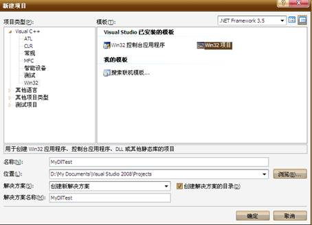

VC2008编写和调用dll
VS2008编写DLL文件，并进行调用，整个教程每一步骤都附有图
第一步，vs生成dll文件
- 打开vs2008–>新建项目–>项目—Win32—Win32项目，项目名称为MyDllTest–>确定

- 直接点下一步，然后选择DLL（D），点完成。
- 右键解决方案中头文件选择“添加—新建项”取名叫Myh,点确定
- 在Myh.h中写代码:
#ifndef DllTesth_H_ #define DllTesth_H_ #ifdef MYLIBDLL #define MYLIBDLL extern "C" _declspec(dllimport) #else #define MYLIBDLL extern "C" _declspec(dllexport) #endif MYLIBDLL int Add(int a, int b); // you can also write like this: // extern "C"{ // _declspec(dllexport) int Add(int plus1, int plus2) //} #endif如图
- 在源文件右键添加新建项，选择def，命名为Mydef,写入代码如图
LIBRARY "MyDllTest" EXPORTS Add @1
- 在解决方案中打开MyDllTest.cpp,写代码如下，即该DLL实现简单的加法
#include "stdafx.h" #include "Myh.h" #include <stdexcept> MYLIBDLL int Add(int a,int b) { return a+b; } - 然后点击生成解决方案，输出成功
- 这样就在当前项目下生成了DLL文件和lib文件，我的项目路径为:D:\My Documents\Visual
Studio 2008\Projects\MyDllTest打开Debug文件夹，如图
可以看到生成的MyDllTest.dll 和MyDllTest.lib文件
第二步，调用dll文件
- 打开vs2008新建项目，C++--win32项目---win32控制台应用程序，取名DllTest点确定
- 点下一步，选择控制台应用程序，点完成
- 首先配置环境，在vs菜单中点击项目，DllTest属性，在配置属性， C++，常规中选择附加包含目录，将MyDllTest项目中Myh.h文件所在的路径添加进去，我的路径为D:\My
Documents\Visual Studio 2008\Projects\MyDllTest\MyDllTest
- 在配置属性， 链接器，常规中选择附加库目录，将MyDllTest项目中MyDllTest.lib文件所在的路径添加进去，我的路径为D:\My
Documents\Visual Studio 2008\Projects\MyDllTest\Debug
- 在配置属性， 链接器，输入中选择附加依赖项，将MyDllTest.lib添加进去，如图
- 此外，还要将之前生成的MyDllTest.dll文件和MyDllTest.lib文件一同复制到DllTest项目中debug目录下，如图
- Debug目录需要刚建好项目的时候提前生成一下才会有，最后一步在DllTest.cpp中写入如下代码
// DllTest.cpp : 定义控制台应用程序的入口点。 // #include "stdafx.h" #include "iostream" #include "Myh.h" using namespace std; int _tmain(int argc, _TCHAR* argv[]) { int a = 10; int b = 20; cout<<"a + b = "<<Add(a,b)<<endl; return 0; }如图
- 点击生成解决方案，成功1个。
- 然后按ctrl+F5进行调试，会弹出如下命令窗口:
VS2008调用dll结束